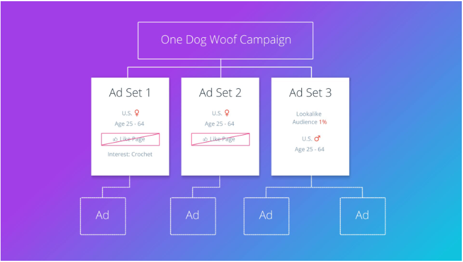

Ad Set Summary

Ad Set 1 is targeting women in the United States, aged 25-64, who don’t like One Dog Woof’s page yet and who are interested in crochet.
Ad Set 2 has the same targeting as the first one, but doesn’t target the interest in crochet. We will see, later, whether that makes any difference in the number of clicks we receive, or in the price we pay per click.
Both ad sets are scheduled to run for a day each, with a lifetime budget of $75 per ad set and a maximum bid of $2.50 per click. We will create one ad for each ad set in the next lesson.
Ad Set 3 is using a lookalike audience, targeting the 1% of Facebook users in the U.S. that are most like the people who already like One Dog Woof’s Facebook page. The age is set to 25-64 and the gender to female.
This ad set is also scheduled to run for a day, with a lifetime budget of $150 and the same maximum bid of $2.50 per click. We will create two ads for this ad set in the next lesson
------------------------------------------------------------------------------------------------------------------------------------------------------------------------------